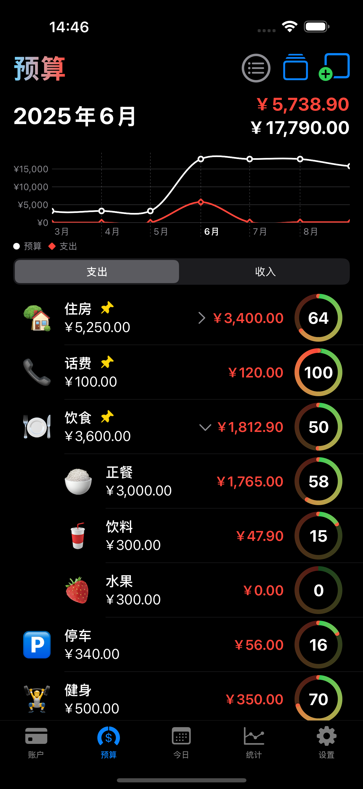
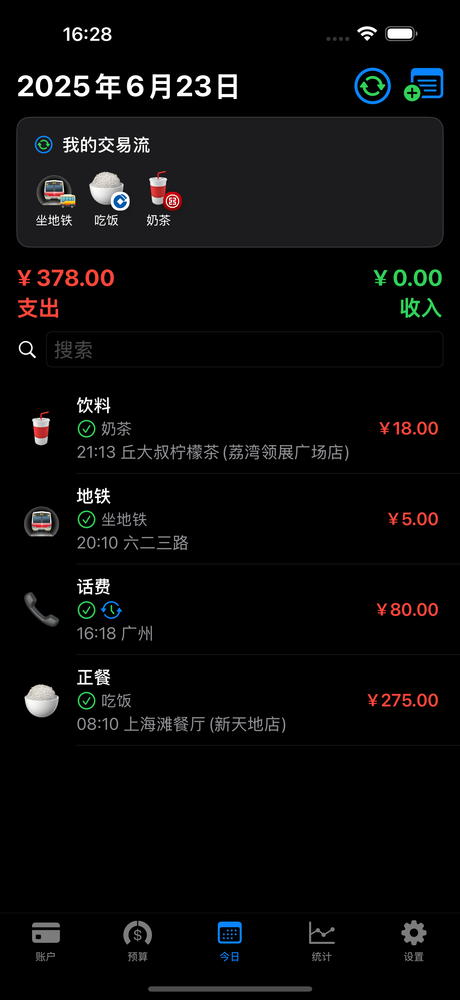

WealthX
欢迎使用 WealthX，一款为你量身打造的个人财务工具，帮助你轻松掌握资产、预算与收支。
🌟 核心体验
📊 月/季度/年 预算视图

🔁 交易流（Flows）

🏦 账户分组 ＋ 个性化图标
🔍 更多亮点
- iCloud 同步：自动跨设备保持最新数据，无需手动备份
- 个性化图标：支持 SF Symbols、Emoji 及自定义图片，让每个账户、预算更有辨识度
- 多级分组管理：资产／负债、账户／预算可按组层级展开收起
- 循环交易：设置重复频率，自动生成定期条目
- GPS 定位标记：记录交易发生地，一眼回溯消费场景
- 预算超额预警：实时查看预算完成度，一目了然
📬 技术支持
如有任何问题或建议，请通过邮件与我们联系：
ericdai2013@gmail.com
本页面由 GitHub Pages 提供支持。